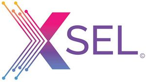

Trade Mark Journal No.2025/010 7 March 2025
WO0000001828003 (9,16,41,42)
Office of origin: India
Date of International Registration:18 June 2024
Date of designation in the UK:
18 June 2024

The mark consists of the word "XSEL" wherein the left half of the device of letter X has equidistant elongated lines in color combination of pink, blue and yellow, of different lengths with dots at each end and the right half of the device of X is in blue colour. The word "SEL" is depicted in smaller size in blue colour after the device of letter X without any space forming the mark XSEL.
The mark contains the colours pink, blue, purple and yellow.
The words "SEL" are depicted in blue colour and the device of "X" is depicted in combination of pink, blue and yellow.
- Class 9
- Downloadable computer software for information technology skill development and for providing learning solutions; computer hardware; computer cables; computer terminals; electronic components for computers; disk drives; apparatus for data storage and retrieval, namely, computer servers; downloadable computer software for electronic data processing of information for purposes of retrieval; electronic and electric isolators; downloadable computer programs for information technology skill development and for providing learning solutions; computer peripherals; data processing apparatus; downloadable computer game programs; radios; televisions; document printers.
- Class 16
- Books, publications, magazines, newspapers, brochures, leaflets, pamphlets, paper boards, stationery, instructional & teaching materials, computer printouts, manuals, operating instructions in printed form, inking ribbons, ink, cards, pens, pencils, advertisement sheets, pictures, graphic reproductions, transparencies, written matters, paper and paper articles, cardboard and cardboard articles, printed matter, adhesives for stationery purposes, artists' materials.
- Class 41
- Education and training services, namely, providing education and training classes online or through academies, schools, institutes, educational centers, universities, correspondence and libraries in the field of skill development of digital and information technology, development of career, leadership and/or professional skills, learning /training solutions, learning and development services including custom content, learning administration, customer education, immersive learning technologies, talent development, sales workforce, data science, aerospace aviation, banking, finance, consumer products, retail, insurance, life sciences, manufacturing, oil gas and mining, energy, telecom, real estate or for any other industry; publication of text books and magazines; mobile library services; arranging and conducting colloquium, conferences, congresses, seminars, symposiums, workshops in the field of skill development of digital and information technology, development of career, leadership and/or professional skills, learning /training solutions, learning and development services including custom content, learning administration, customer education, immersive learning technologies, talent development, sales workforce, data science, aerospace aviation, banking, finance, consumer products, retail, insurance, life sciences, manufacturing, oil gas and mining, energy, telecom, real estate or for any other industry; organizing competitions in the field of skill development of digital and information technology, development of career, leadership and/or professional skills, learning /training solutions, learning and development services including custom content, learning administration, customer education, immersive learning technologies, talent development, sales workforce, data science, aerospace aviation, banking, finance, consumer products, retail, insurance, life sciences, manufacturing, oil gas and mining, energy, telecom, real estate or for any other industry.
- Class 42
- Computer consultation and programming for others; rental of computer hardware; design, maintenance, rental and updating of computer software; computer leasing and consultancy; computer software research; computer technology consultancy; providing information relating to the use and maintenance of computer software; scientific and industrial research relating to the manufacture of computer hardware, computer system analysis; recovery of computer data; providing search engines for the internet; designing and hosting digital content on the internet.
NIIT LEARNING SYSTEMS LIMITED
Representative: Worldwide Intellec, 313, best sky tower,, netaji subhash place,, pitampura, delhi 110034, INDIA